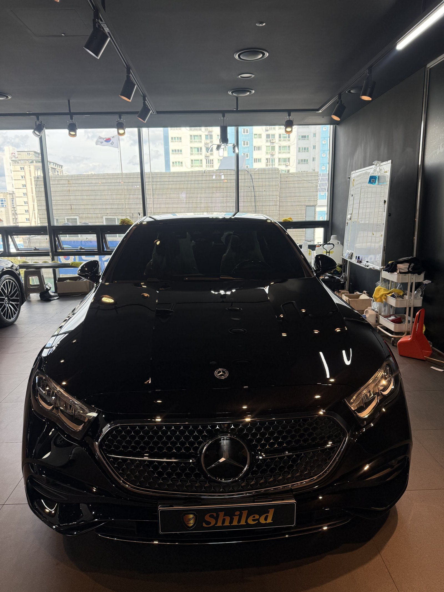
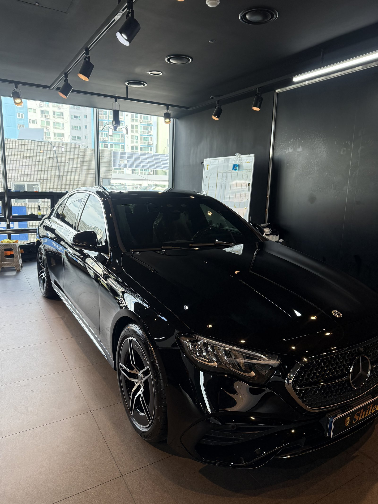
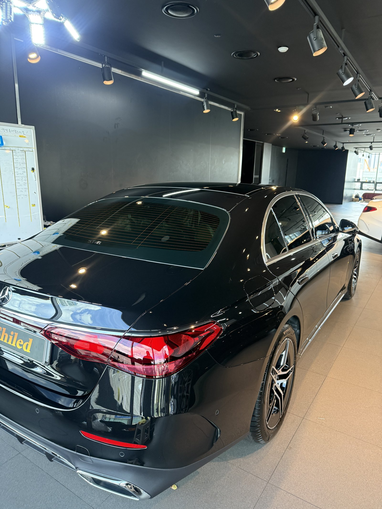
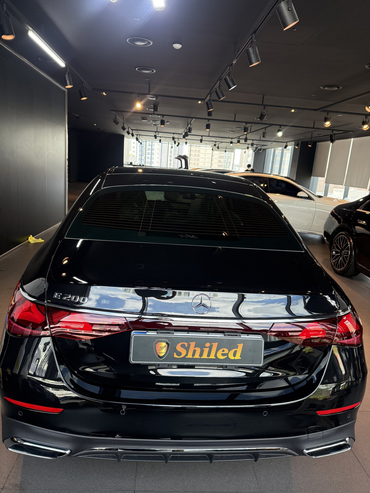
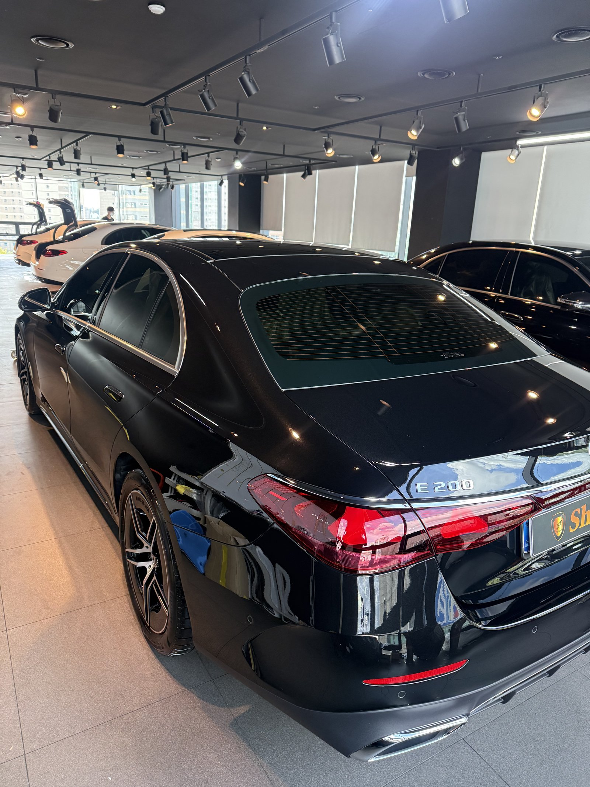
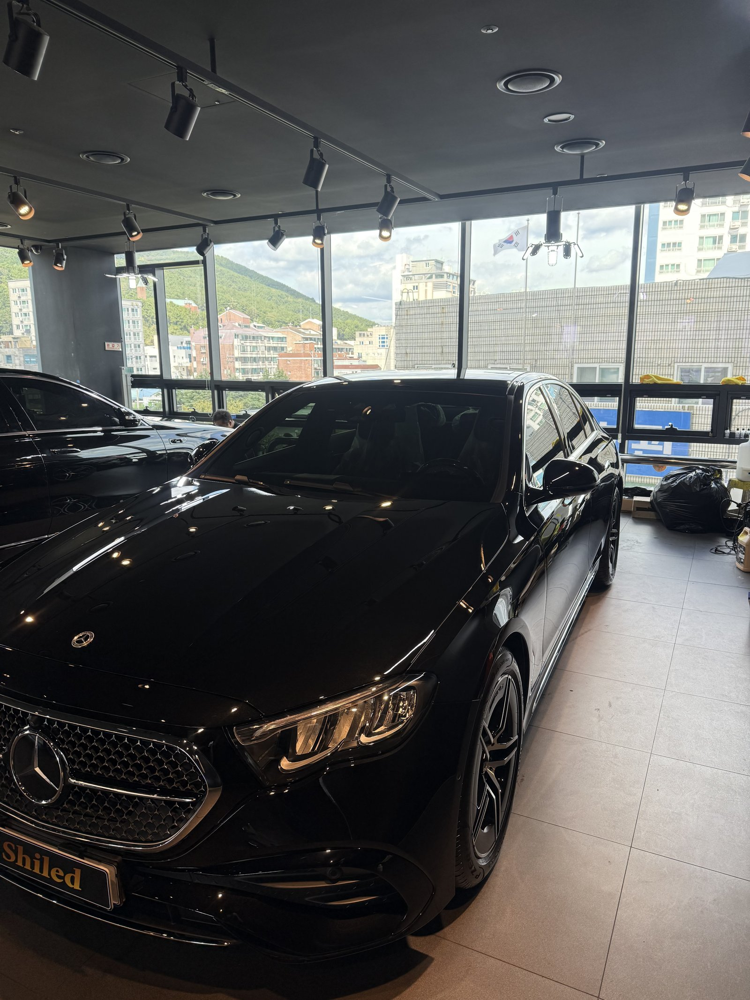
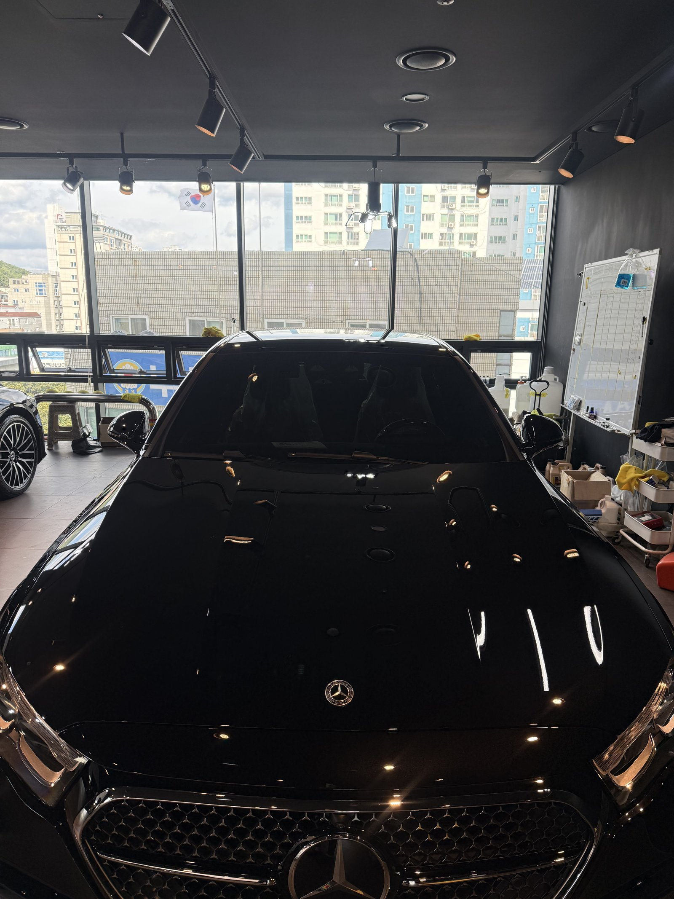
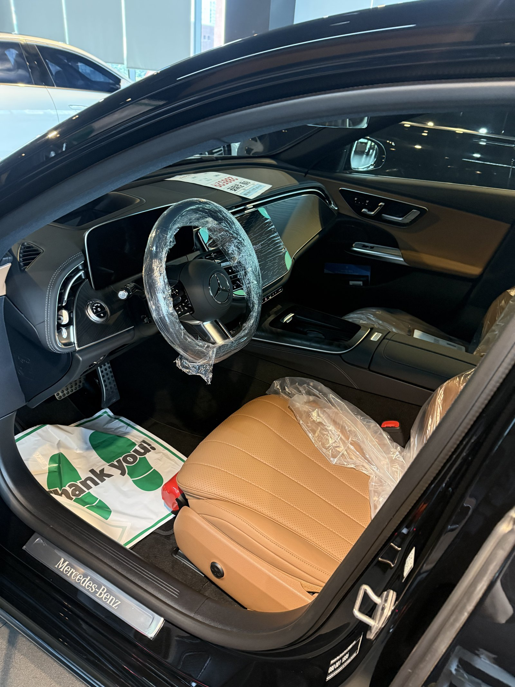
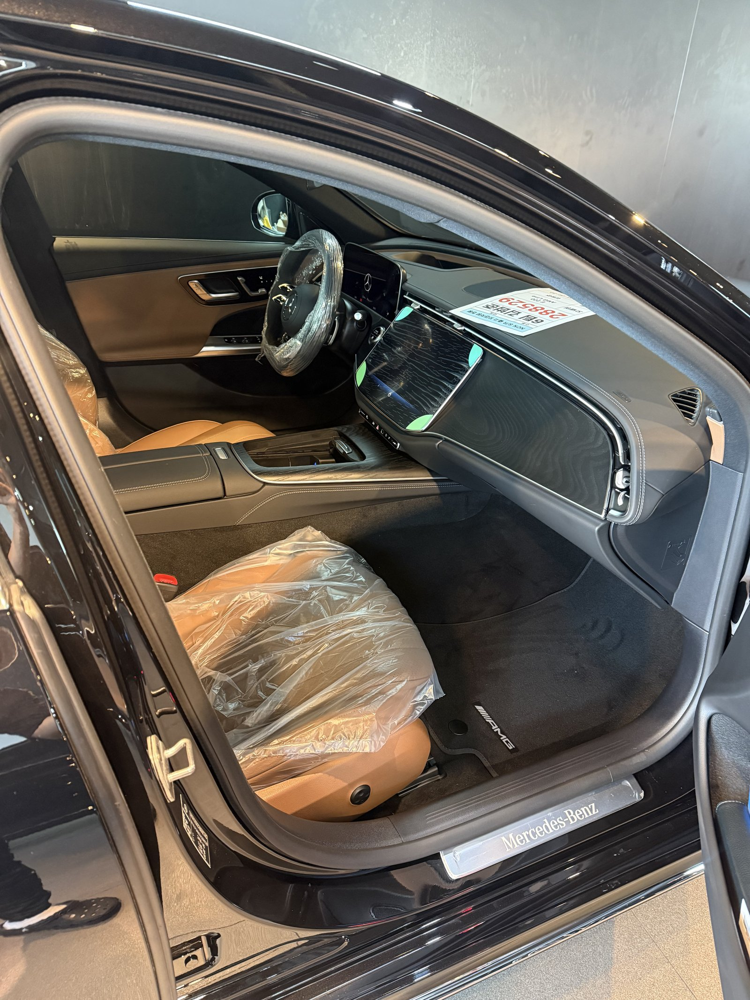
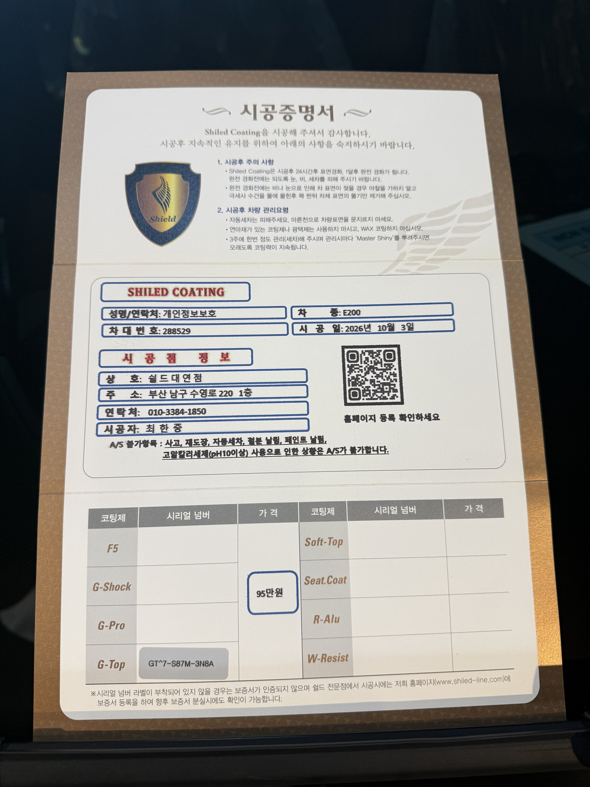

벤츠 E200 AMG라인, 검정 신차입니다.
같은 날 들어온 검정 E클래스들은 대부분 F5였는데, 이 차는 G-TOP으로 진행했습니다.
실내는 새들 브라운 가죽입니다.
부산 유리막코팅에서 코팅제를 다르게 고른 사례로 남깁니다.

검정 차인데 왜 F5가 아니라 G-TOP인가요?
F5는 색감 깊이, G-TOP은 발수·방오에 특화된 코팅입니다.
검정은 보통 색감을 먼저 보지만, 관리 편의를 더 중요하게 보시면 G-TOP이 맞습니다.
물이 맺혀 굴러 떨어지는 성질이 강해 오염이 면에 덜 남습니다.
이번 부산 유리막코팅은 G-TOP으로 진행했습니다.


낮 자연광 아래에서 무엇을 확인했나요?
매장 창가로 들어오는 낮빛 아래에서 검정 면을 돌아가며 봤습니다.
트렁크 리드에는 매장 천장 조명과 창밖 풍경이 그대로 비칩니다.
그 상이 흐려지는 곳이 없는지 확인했습니다.
코팅제는 대표가 직접 개발·제조한 제품입니다.


기술자의 팁
G-TOP처럼 발수가 강한 코팅은 비 온 뒤 물방울이 굴러 떨어지며 오염을 함께 데려갑니다. 다만 고인 물이 그대로 마르면 자국이 남으니, 주차 후 물방울이 많이 맺혀 있으면 한 번 털어주십시오.


새들 브라운 실내는 출고 전 그대로 지킵니다
실내는 새들 브라운 시트에 보호 비닐이 씌워진 신차 상태 그대로입니다.
외부는 G-TOP으로 마무리하고, 인도까지 깨끗한 상태로 관리합니다.
인도 전에 대표가 직접 최종 상태를 확인합니다.


시공증명서를 함께 드립니다
모든 시공 차량에 시공증명서를 드립니다.
차종·시공일·코팅제 시리얼 번호가 적혀 있고, 홈페이지에 등록해 보증을 받으실 수 있습니다. 이 차는 G-TOP으로 기록돼 있습니다.

차종·시공일·코팅제 시리얼이 기재된 시공증명서
자주 묻는 질문
Q. F5와 G-TOP은 어떻게 고르나요?
A. 색감 깊이를 우선하시면 F5, 발수·방오와 관리 편의를 우선하시면 G-TOP을 권합니다. 이 차는 G-TOP으로 진행했습니다.
Q. 검정 차에 G-TOP을 올려도 광이 나나요?
A. 납니다. G-TOP도 채도·경도 모두 갖춘 코팅이며, 발수·방오 쪽에 더 특화돼 있다는 차이입니다.
Q. 왜 출고 전에 코팅하나요?
A. 도장면이 가장 깨끗할 때 올린 코팅이 가장 오래갑니다. 운행과 세차로 잔기스가 생기기 전에 입혀두는 것이 핵심입니다.
Q. 코팅 후 세차는 언제부터 하나요?
A. 코팅이 자리 잡을 시간이 필요하므로 시공 직후 강한 세차는 피하는 것이 좋습니다. 정확한 시점은 인도할 때 안내해 드립니다.
Q. 쉴드광택 위치와 예약은 어떻게 하나요?
A. 부산 남구 유엔로220 1F 쉴드광택입니다. 예약·상담은 010-3384-1850, 대표 최한중이 직접 상담하고 책임 시공합니다.
새 차일수록 시작점이 다릅니다. 가장 깨끗할 때 입혀두십시오.
제품을 직접 만드는 사람이 직접 시공합니다.
부산에서 신차 유리막코팅을 고민 중이시면 편하게 연락 주십시오.
어떤 차를 타냐보다 어떻게 타냐가 중요합니다~!
시공 중에는 전화를 받지 못할 때가 많습니다.
카카오톡으로 차종과 원하시는 시공을 남겨주시면 확인 후 답변드립니다.
쉴드광택 · 부산 남구 유엔로220 1F · 대표 최한중